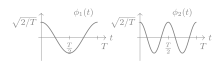
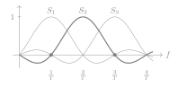

Seminar 8. OFDM
The seven questions of the session, each with three options and one correct answer. Work out your answer before opening a solution.
Consider an OFDM system with symbol period T>0 and subcarrier waveforms \begin{equation*} \phi_k(t)=\begin{cases}\sqrt{\tfrac2T}\,\cos\bigl(2\pi k\tfrac tT\bigr)&0\leq t<T\\[0.6ex]0&\text{otherwise},\end{cases} \end{equation*} for k\in\{1,2,\ldots,N\}. The transmitter sends x(t)=\sum_{k=1}^{N}x_k\,\phi_k(t) on N subcarriers, where x_k=a for the bit 1 and x_k=-a for the bit 0, with a>0. You may use 2\cos^2A=1+\cos2A and 2\cos A\cos B=\cos(A-B)+\cos(A+B). Note that \phi_k(t) can be written as \phi_k(t)=\sqrt2\,\psi(t)\cos\bigl(\smash{2\pi k\tfrac tT}\bigr), where \psi(t)=\smash{\tfrac1{\sqrt T}} for 0\leq t<T and 0 otherwise has Fourier transform \hat\psi(f)=\sqrt T\,\sinc(fT)\,e^{-j\pi fT}.
Question 1. Calculate the energy of \phi_1.
(a) 2.
(b) 1.
(c) \tfrac12.
Show solution
The correct answer is (b) ★
With the first identity, the energy of \phi_1 is \begin{equation*} \tfrac2T\int_0^T\cos^2\bigl(2\pi\tfrac tT\bigr)\drm t =\tfrac1T\int_0^T\bigl(1+\cos(4\pi\tfrac tT)\bigr)\drm t=1, \end{equation*} because a cosine integrates to zero over a whole number of cycles. The same computation gives energy 1 for every subcarrier. The answer is (b).
Question 2. Calculate the inner product \langle\phi_1,\phi_2\rangle.
(a) 0.
(b) \tfrac12.
(c) 1.
Show solution
The correct answer is (a) ★
With the second identity, \begin{equation*} \langle\phi_1,\phi_2\rangle =\tfrac1T\int_0^T\bigl(\cos(2\pi\tfrac tT)+\cos(6\pi\tfrac tT)\bigr)\drm t=0, \end{equation*} because both cosines complete whole cycles in the period. With question 1, the two subcarriers overlap during the whole period and are orthonormal, by Section 4.1. The same computation gives zero for any two distinct subcarriers. The answer is (a).
Question 3. With N=2, the bits 1\;0 are sent on subcarriers 1 and 2, respectively. What is the value of x(t) at t=\tfrac T2? Draw \phi_1(t) and \phi_2(t), separately, for 0\leq t<T.
(a) 0.
(b) -a\sqrt{2/T}.
(c) -2a\sqrt{2/T}.
Show solution
The correct answer is (c) ★
The bit 1 gives x_1=a and the bit 0 gives x_2=-a, so x(t)=a\,\phi_1(t)-a\,\phi_2(t). At t=\tfrac T2 the first cosine is \cos\pi=-1 and the second is \cos2\pi=1, so \begin{equation*} x\bigl(\tfrac T2\bigr)=a\sqrt{\tfrac2T}\,(-1)-a\sqrt{\tfrac2T}\,(1)=-2a\sqrt{\tfrac2T}. \end{equation*} The answer is (c). The first subcarrier makes one cycle in the period and the second makes two, both of height \sqrt{2/T}.

Question 4. Calculate the Fourier transform \hat\phi_k(f) with the modulation property in Table 5.2 of the lecture notes. Write it in terms of S_m(f)=\sinc(fT-m), defined for every integer m.
(a) \vphantom{\sqrt{\tfrac T2}\bigl(\bigr)}(-1)^k\sqrt{\tfrac T2}\,e^{-j\pi fT}\bigl(S_k(f)+S_{-k}(f)\bigr).
(b) \vphantom{\sqrt{\tfrac T2}\bigl(\bigr)}\sqrt{\tfrac T2}\,e^{-j\pi fT}\,S_k(f).
(c) \vphantom{\sqrt{\tfrac T2}\bigl(\bigr)}(-1)^k\sqrt{2T}\,e^{-j\pi fT}\bigl(S_k(f)+S_{-k}(f)\bigr).
Show solution
The correct answer is (a) ★
By the modulation property with f_c=\tfrac kT, \begin{equation*} \hat\phi_k(f)=\tfrac{\sqrt2}2\Bigl(\hat\psi\bigl(f-\tfrac kT\bigr)+\hat\psi\bigl(f+\tfrac kT\bigr)\Bigr). \end{equation*} Since \hat\psi\bigl(f\mp\tfrac kT\bigr)=\sqrt T\,\sinc(fT\mp k)\,e^{-j\pi fT}e^{\pm j\pi k} and e^{\pm j\pi k}=(-1)^k, \begin{equation*} \hat\phi_k(f)=(-1)^k\sqrt{\tfrac T2}\,e^{-j\pi fT}\bigl(S_k(f)+S_{-k}(f)\bigr), \end{equation*} where S_{-k}(f)=\sinc(fT+k). The carrier moves the sinc of the pulse to \pm\tfrac kT. The factor e^{-j\pi fT} is common to all the subcarriers; the sign (-1)^k depends on k. The answer is (a).
Question 5. Draw S_1(f), S_2(f) and S_3(f) on the same axes for 0\leq f\leq\tfrac4T, marking their centers and zeros (a qualitative sketch; exact values are not required). What is the value of |\hat\phi_2(f)| at the centers of S_1(f) and S_3(f)?
(a) 0.
(b) \tfrac2\pi\sqrt{T/2}.
(c) \sqrt{T/2}.
Show solution
The correct answer is (a) ★
By question 4, the factor in front of the bracket has modulus \sqrt{T/2}, so |\hat\phi_2(f)|=\sqrt{T/2}\,|S_2(f)+S_{-2}(f)|. At f=\tfrac1T the two sincs are \sinc(-1) and \sinc(3), and at f=\tfrac3T they are \sinc(1) and \sinc(5), all sincs of nonzero integers, so |\hat\phi_2|=0 at both frequencies. Each S_k is the same sinc centered at \tfrac kT, with zeros at all the other multiples of \tfrac1T, and so is its mirror S_{-k}. The spectra of the subcarriers overlap, but at the frequency of each subcarrier all the others vanish. Their orthogonality follows from the integral of question 2, not from these zeros alone. It is the picture of the matched filter with time and frequency exchanged: there the copies of g, the triangles of T9 (Example 5.3, Figure 5.2), overlapped in time and each vanished at the sampling instants of the others. The answer is (a).

Question 6. A system uses N=10 subcarriers with period T=5\,\mus. Each subcarrier sends two bits at the same time, i.e., one with symbols \pm a on its cosine and another with symbols \pm a on a sine of the same frequency, that is, QPSK. What is the information bit rate?
(a) 2 Mbit/s.
(b) 0.4 Mbit/s.
(c) 4 Mbit/s.
Show solution
The correct answer is (c) ★
QPSK carries two bits per period on each subcarrier, one on the cosine and one on the sine of the same frequency. A period carries 2N=20 bits, so \begin{equation*} R_{\rm b}=\frac{20}{5\,\mu\text{s}}=4\text{ Mbit/s}. \end{equation*} The answer is (c).
Question 7. The Wi-Fi OFDM system IEEE 802.11a/g has subcarrier spacing 312.5 kHz, or \tfrac5{16} MHz, and uses 48 subcarriers with a total bandwidth of 20 MHz. Each useful symbol period T is preceded by a 0.8\,\mus guard interval carrying no new bits. Each subcarrier uses 64-QAM (6 coded bits per symbol), with code rate \tfrac34. Find first the useful symbol duration T, then the transmission rate in information bits per second, and finally select the spectral efficiency of the system.
(a) 3.6 bit/s/Hz.
(b) 2.7 bit/s/Hz.
(c) 4.5 bit/s/Hz.
Show solution
The correct answer is (b) ★
The spacing is \tfrac1T, so T=\tfrac{16}5\,\mu\text{s}=3.2\,\mus, and with the guard interval one OFDM symbol is sent every 3.2+0.8=4\,\mus. Each symbol carries 48\cdot6=288 coded bits, of which 288\cdot\tfrac34=216 are information bits, by R=r\log_2M of Section 5.1. Hence \begin{equation*} R_{\rm b}=\frac{216}{4\,\mu\text{s}}=54\text{ Mbit/s}, \end{equation*} the nominal information rate of the physical layer, before packet and access overheads, at 54/20=2.7 bit/s/Hz. The answer is (b).